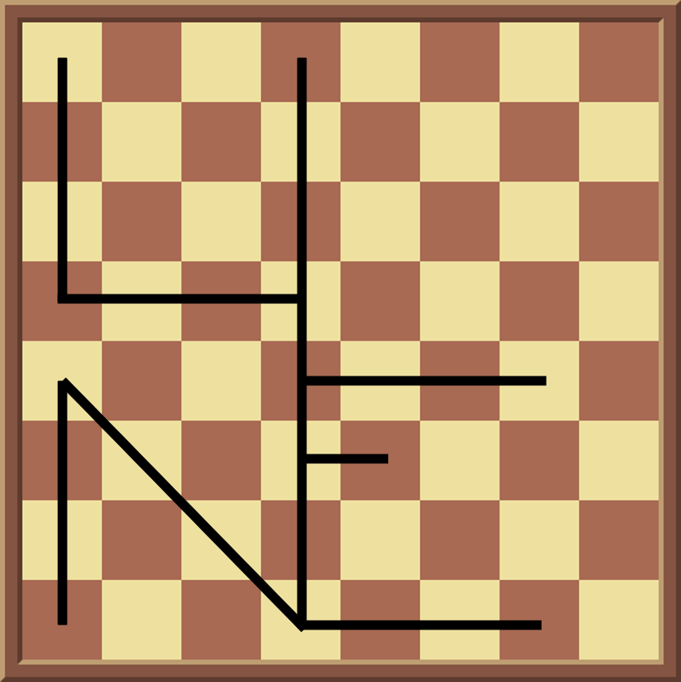

Solution: Chess Shop
Answer: UNENDING STRUGGLE
Written by Jonathan
The solution to the logic puzzle is given below. They are coded as follows: red for Atomic chess, orange for Crazyhouse, yellow for Helpmate, green for standard chess and blue for Three-check.
In general, assigning puzzles to type was supposed to be more challenging than actually solving the puzzle after determining the type. It helps to get the standard puzzles out of the way first. Helpmate was used for puzzles where all other variants could not be used. The other 3 variants tended to provide a unique solution. There was a “uniqueness order” in this puzzle which ended up being standard < Three-check < Crazyhouse = Atomic < Helpmate (so for instance, some of the Crazyhouse puzzles could be resolved with Helpmate too, but the Helpmate puzzles cannot be resolved by any of the other variants).
| Win in 1 move | ||
| Qe4-e7# | Ra5-a8# | Qa1-a4# |
| Qh4-h7# | Qa5-d5# | Re4-h4# |
| Qa5-a8# | Qd1-b3# | Qb3-d5# |
| Win in 2 moves | ||
| 1. Bc6 g6 2. Rd1-d2# | 1. B@f6 Re7 2. Ra5-a8# | 1. Bf6 Kf2 2. Bf6-h4# |
| 1. Qf6 Rg6 2. Qf6-h8# | 1. Rh8 Rc8 2. Ba6-c8# | 1. Qa4 Ba3 (any) 2. Qa4-d1# (Placing Rh1 has Ke2) |
| 1. R@c3 Kd1 2. Rb4-b1# | 1. Ra5 Ra5 (or any move) 2. Qd1-g1# (Initial position has white in check) | 1. B@f4 Kd1 2. Rg4-g1# |
| Win in 3 moves | ||
| 1. B@d4 Bc3 2. Bxc3 Ka2 3. Ba8-d5# | 1. Qh8 Be5 2. Qxe5 Rb2 3. Rc7-a7# | 1. Bb4+ Bb4 2. Qb4+ Qb4 3. Re3-f3+ |
| 1. g8=B O-O-O 2. Bc4 Bb8 3. Bc4-a6# | 1. Nxf7+ Kh7 2. Rh1+ Bxh1 3. Re1-h1+ | 1. Nf6 Kg1 2. Ng4 Nh1 3. Bh4-f2# |
| 1. R7d5+ Kg4 2. Rg5 Kf3 3. Rd3-e3 (f5 blocks 3 checks) | 1. R@h5 Qh4 2. Rxh4 Rh3 3. Bd4-g1# | 1. Nb6+ Bb6 2. Nb6+ Qb6 3. Qh4-e4+ |
| 1. Qa3+ Rxa3 2. Bb4+ Qb4 3. c4-c5+ | 1. Qxf5+ Qxf5 2. Qxf5+ Kxf5 3. Ba6-c8+ | 1. Qa2+ Qxa2 2. Bb3+ Qxb3 3. Ba6-c4+ |
| 1. B@h6 Kg8 2. R@g7 Kh8 3. Rd1-d8# | 1. Nd3 e5 2. fxe6 Be7 3. c4-c5# | 1. Bc3+ Kf8 2. Bg7+ Ke8 3. Rd1-d8 |
| 1. Rb1+ Kh2 2. Rh1+ Kg3 3. Rd4-g4 | 1. Kxg8 Ka1 2. R@h1 b1=(Q) 3. Bd8-f6# | 1. R@g3 Kh4 2. B@e8 h5 3. Bd4-f6# |
| 1. Kb1 Rf1 2. Kc1 Nf2 3. Rc3-e3# | 1. b8=Q h4 2. Qc8 Rh2 3. Rd1-d3# | 1. Rh3+ Bh4 2. Rxh4+ Qxh4 3. Re5-h5+ |
| 1. Qg8+ Qxg8 2. Rf8+ Qxf8 3. Re1-e8+ |
When all puzzles have been solved, as hinted by the flavortext only the last move matters. The key insight is that each of the last moves can be overlaid on a normal chess board to form letters grouped by the type of puzzle as shown below.
| Atomic chess | Crazyhouse | Helpmate | Standard chess | Three-check |
|  |
Read off in the order of puzzle variant given on the first page, to obtain the answer, UNENDING STRUGGLE.
Author's Notes
The puzzle went through multiple revisions to help solvers who have never played chess to get used to the puzzle, especially with the 1- and 2-move puzzles first.
I have always wanted to write a chess puzzle, and always had this idea of using other chess variants which have not been seen much in puzzlehunts. I think the idea of overlaying moves to form shapes on a board itself is very interesting, and was an idea I had been toying with for awhile. I tried to make the standard puzzles on the easier side to hopefully get some solvers interested, while making the other variants harder appropriately. The number of puzzles was unfortunately necessary for the setup, but I tried to make it more approachable as far as possible by cutting the number of moves to a maximum of 3. Overall, we think this is a more niche puzzle, and hopefully some puzzlers out there appreciated it!